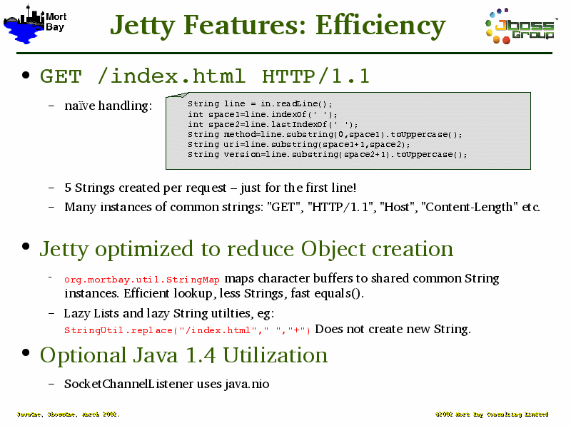

Notes:
The naïve handling of a request line shows how object creation is the by product of most String handling in Java. Most RFC protocols are string based.
Jetty is rather anal about avoiding such object creations.